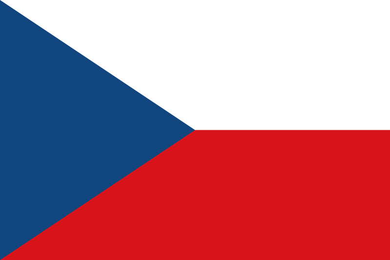

Tšekki:
Tietoa:
Pääkaupunki: Praha
Valuutta: Tšekin koruna (CZK)
Valtiomuoto: tasavalta
Presidentti: Miloš Zeman (kuva alempana)
Pääministeri: Andrej Babiš

Pinta-ala: Yhteensä 78 867 km²
Viralliset kielet: tšekin kieli
Lähteet: WikipediaTšekin lippu:
Suurimmat kaupungit
| Kaupunki | Asukasluku |
|---|---|
| 1. Praha | 1 267 449 |
| 2. Brno | 377 028 |
| 3. Ostrava | 292 681 |
| 4. Plzeň | 169 858 |
Maantiede
Tšekin maantiede on vaihtelevaa. Läntinen Böömi muodostaa alangon, jota ympäröivät matalat vuoret kuten Sudeetit. Elbe (tšekiksi Labe) ja sen sivujoki Vltava kuljettavat vedet pois alueelta. Elben lähteillä Sudeeteilla, Krkonošella sijaitsee 1 602 metriä korkea Sněžka, joka on Tšekin korkein kohta. Määri, Tšekin itäinen osa, on mäkistä, ja sieltä vedet laskevat enimmäkseen Moravajoen kautta, mutta myös Oderjoen lähde on Määrissä.
Kulttuuriperinteet ja arkikulttuuri
Tšekki on ollut historiansa aikana jaettu saksalaisten ja slaavien välillä, joten maan kulttuuriperinteet ovat sekoitusta sekä saksalaisesta että slaavilaisesta kulttuurista. Toisaalta esimerkiksi renessanssin ja barokin arkitehtuurissa voi nähdä runsaasti italialaisia vaikutteita. Henkilömäärään suhteutettuna Tšekissä juodaan eniten olutta maailmassa. Tšekkiläinen keittiö tarjoaa melko liha- ja rasvapitoisia ruokia, jotka sopivat yhteen oluen kanssa. Tuoreet vihannekset ja kala ovat vähemmällä huomiolla. Knöödelit ja perunaletut ovat omaleimaisia lisukkeita.
Kuva Prahan linnan vierestä